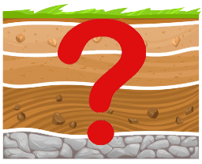

Indonesia Paleotsunami Database
Indonesia Paleotsunami Database merupakan sebuah WebGIS yang menyajikan data kejadian tsunami yang pernah melanda Indonesia. WebGIS ini selain sebagai peta berbasis internet yang menampilkan data kejadian tsunami, WebGIS ini juga sebagai pangkalan data (database) yang menyimpan seluruh kejadian tsunami beserta karakteristiknya. Informasi yang ada dalam WebGIS ini adalah data kejadian tsunami dan endapan paleotsunami di Indonesia. Kehadiran media ini sebagai sarana infomrasi untuk keperluan penelitian paleotsunami di masa mendatang dan sebagai sarana edukasi untuk menambah kesadaran masyarakat terkait potensi tsunami di Indonesia.
Seluruh data dalam WebGIS ini dapat diakses dan diunduh secara gratis.
PENTING!
Cantumkan Referensi WebGIS ini ketika anda menggunakannya sebagai rujukan dengan format: Ibtihaj, Ihda. 2021. Indonesia Paleotsunami Database, Universitas Indonesia. [tanggal akses]Disclaimer
- Indonesia Paleotsunami Database merupakan proyek penelitian paleotsunami yang dikembangkan oleh Geosains FMIPA Universitas Indonesia
- Data yang disajikan dalam WebGIS ini berasal dari penelitian Tim Riset Paleotsunami Geosains Universitas Indonesia dan berbagai literatur tentang tsunami di Indonesia seperti jurnal, buku, laporan penelitian, tugas akhir dan publikasi lainnya. Data dalam pangkalan data ini akan terus diperbaharui seiring dengan penelitian terbaru untuk peningkatan kualitas data dalam pangkalan data.
- Pengolahan pangkalan data (database) dan Pengembangan WebGIS ©Ihda Ibtihaj 2021
Legenda
| Seluruh Kejadian Tsunami | |
| Lokasi Sumber Tsunami | |
| Zona Subduksi | |
| Sesar | |
| Validitas | |
| Excellent | |
| Moderate | |
| Fair | |
| Klasifikasi Waktu | |
| Historical | |
| Prehistorical | |
| Bukti Alam | |
| Primer | |
| Sekunder | |
| Status Deposit | |
| Deposit Ditemukan | |
|  | Deposit Tidak Diketahui |
| Sebab Tsunami | |
| Gempa Bumi | |
| Vulkanisme | |
 |
Longsor Bawah Laut |
| Gempa Bumi, Longsoran | |
| Gempa Bumi, Vulkanisme | |
| Vulkanisme, Longsoran | |
Referensi
| No | Citation | References |
|---|---|---|
| 1 | Amijaya & Winardi, 2008 | Amijaya, Hendra D. & Sarju Winardi. (2008). Studi sedimentologi endapan tsunami, Pangandaran, Ciamis, Jawa Barat.pdf. Media Teknik, 2, 109-112. |
| 2 | Arwani dan Firmansyah, 2013 | Arwani, M., & Firmansyah, M. A. (2013). Identifikasi Kerangka Pengetahuan Masyarakat Nelayan di Kota Bengkulu Dalam Kesiapsiagaan Bencana Sebagai Basis Dalam Merumuskan Model Pengelolaan Bencana. Jurnal Dialog Penganggulangan Bencana, 4(1), 57-64. |
| 3 | Aswan et al., 2017 | Aswan, Zaim, Y., Rizal, Y., Sukanta, I. N., Anugrah, et al. (2017). Age determination of paleotsunami sediments around Lombok Island, Indonesia, and identification of their possible tsunamigenic earthquakes. Earthquake Science, 30(2), 107-113. https://doi.org/10.1007/s11589-017-0179-2 |
| 4 | Azzaman dkk., 2017 | Azzaman, M. A., Bramastya, K. G., Pratama, I. W., Bernhardt, A., Kempf, P., & Marliyani, G. I. (2017). Studi endapan paleotsunami di daerah pesisir Pantai Pariaman , Sumatera Barat. Proceeding Seminar Nasional Kebumian Ke-10, January, 1941-1957. |
| 5 | BMKG, 2018 | Badan Meteorologi Klimatologi dan Geofisika. (2018). Katalog Gempa Signifikan dan Merusak 1874-2017. BMKG. |
| 6 | Bani et al., 2020 | Bani, P., Le Glas, E., Kristianto, Aiuppa, A., & Syahbana, D. K. (2020). The little known Awu volcano is the highest CO2 degassing source on earth. 1640(57). |
| 7 | BNPB, 2012 | BNPB. (2012). Menuju Indonesia Tangguh Menghadapi Tsunami. Jakarta: BNPB. |
| 8 | Borero et al., 2011 | Borrero, J. C., McAdoo, B., Jaffe, B., Dengler, L., Gelfenbaum, G., Higman, B., Hidayat, R.,et al. (2011). Field survey of the March 28, 2005 Nias-Simeulue earthquake and Tsunami. Pure and Applied Geophysics, 168(6-7), 1075-1088. https://doi.org/10.1007/s00024-010-0218-6 |
| 9 | Borrero et al., 2009 | Borrero, J. C., Weiss, R., Okal, E. A., Hidayat, R., Suranto, Arcas, D., & Titov, V. V. (2009). The tsunami of 2007 September 12, Bengkulu province, Sumatra, Indonesia: post-tsunami field survey and numerical modelling. Geophysical Journal International, 178(1), 180-194. https://doi.org/10.1111/j.1365-246X.2008.04058.x |
| 10 | Cipta, 2009 | Cipta, Athanius. (2009). Gempabumi dan Tsunami Gorontalo 17 Nopember 2008. Bulletin Vulkanologi Dan Bencana Geologi, IV(1), 1-12. |
| 11 | Daly et al., 2019 | Daly, P., Sieh, K., Seng, T. Y., McKinnon, E. E., Parnell, A. C., Ardiansyah, Feener, R. M., Ismail, N., Nizamuddin, & Majewski, J. (2019). Archaeological evidence that a late 14th-century tsunami devastated the coast of northern Sumatra and redirected history. Proceedings of the National Academy of Sciences of the United States of America, 116(24), 11679-11686. https://doi.org/10.1073/pnas.1902241116 |
| 12 | Fisher & Harris, 2016 | Fisher, T. M. L., & Harris, R. A. (2016). Reconstruction of 1852 Banda Arc megathrust earthquake and tsunami. Natural Hazards, 83(1), 667-689. https://doi.org/10.1007/s11069-016-2345-6 |
| 13 | Fujii et al., 2011 | Fujii, Y., Satake, K., & Nishimae, Y. (2011). Observation and modeling of the January 2009 west Papua, Indonesia Tsunami. Pure and Applied Geophysics, 168(6-7), 1089-1100. https://doi.org/10.1007/s00024-010-0220-z |
| 14 | Fujino et al., 2014 | Fujino, S., Sieh, K., Meltzner, A. J., Yulianto, E., & Chiang, H. W. (2014). Ambiguous correlation of precisely dated coral detritus with the tsunamis of 1861 and 1907 at Simeulue Island, Aceh Province, Indonesia. Marine Geology, 357, 384-391. https://doi.org/10.1016/j.margeo.2014.09.047 |
| 15 | Geurhaneu dkk.,2016 | Geurhaneu, N. Y., Prasetio, F. B., & Latuputty, G. (2016). Kebencanaan geologi kelautan di bagian utara pulau obi , maluku marine geological hazard in Northern Part of Obi Island , Molucca. Jurnal Geologi Kelautan, 14(1), 23-36. |
| 16 | Giachetti et al., 2012 | Giachetti, T., Paris, R., Kelfoun, K., & Ontowirjo, B. (2012). Tsunami hazard related to a flank collapse of Anak Krakatau Volcano, Sunda Strait, Indonesia. Geological Society Special Publication, 361(1), 79-90. https://doi.org/10.1144/SP361.7 |
| 17 | Haribuana & Yuwono, 2018 | Haribuana, I. P. Y., & Yuwono, J. S. E. (2018). Jejak Permukiman Pada Bekas Kawah Doro Bente: Sebuah Perspektif Geoarkeologi Kawasan Tambora. Forum Arkeologi, 31(2), 93. https://doi.org/10.24832/fa.v31i2.542 |
| 18 | Harris & Major, 2016 | Harris, R., & Major, J. (2016). Waves of destruction in the East Indies: The Wichmann catalogue of earthquakes and tsunami in the Indonesian region from 1538 to 1877. Geological Society Special Publication, 441(1), 9-46. https://doi.org/10.1144/SP441.2 |
| 19 | Hermansyah, 2012 | Hermansyah. (2012). Naskah Ta-bir Gempa; Antara Mitigasi Bencana dan Kearifan Lokal di Aceh (Kajian Terhadap Naskah-naskah Kuno). Proceeding ADIC III, 3, 1-16. http://oreilly.com/catalog/errata.csp?isbn=9781449340377 |
| 20 | Hidayat et al., 2020 | Hidayat, A., Marfai, M. A., & Hadmoko, D. S. (2020). Eruption on Indonesia-s volcanic islands: A review of potential hazards, fatalities, and management. IOP Conference Series: Earth and Environmental Science, 485(1). https://doi.org/10.1088/1755-1315/485/1/012061 |
| 21 | Iida et al, 1967 | Iida, K., Cox, D. C., & Pararas-Carayannis, G. (1967). Preliminary catalog of tsunamis occurring in the Pacific Ocean. In Hawaii Institute of Geophysics |
| 22 | Jaffe et al., 2006 | Jaffe, B. E., Borrero, J. C., Prasetya, G. S., Peters, R., McAdoo, B., Gelfenbaum, G., et al. (2006). Northwest Sumatra and offshore Islands field survey after the December 2004 Indian Ocean tsunami. Earthquake Spectra, 22(SUPPL. 3). https://doi.org/10.1193/1.2207724 |
| 23 | Kato et al., 2007 | Kato, T., Ito, T., Abidin, H. Z., & Agustan. (2007). Preliminary report on crustal deformation surveys and tsunami measurements caused by the July 17, 2006 South off Java Island Earthquake and Tsunami, Indonesia. Earth, Planets and Space, 59(9), 1055-1059. https://doi.org/10.1186/BF03352046 |
| 24 | Kusumastuti, 2020 | Kusumastuti, Y., Marin, J., Putra, P. S., & Nugroho, S. H. (2020). Karakteristik Sedimentologi dan Geokimia Endapan Tsunami di Teluk Busong, Pulau Simeulue. Jurnal Geosains Dan Teknologi, 3(1), 12. https://doi.org/10.14710/jgt.3.1.2020.12-20 |
| 25 | Kusumawardani dkk., 2018 | Kusumawardani, M., & Kasim, S. (2018). Karakteristik Endapan Tsunami Berdasarkan Metode Granulometri dan Metode Suseptibilitas di Sulawesi Tengah Charactristic of Tsunami Deposits Based on Granulometric Method and Susceptibility Method in Central Sulawesi. Natural Science: Journal of Science and Technology, 7(1), 36-43. |
| 26 | Lassa, 2009 | Lassa, J. (2009). Bencana Yang Terlupakan? Mengingat Kembali Bencana Larantuka dan Lembata 1979-2009 (The Forgotten Disasters? Remembering The Larantuka and Lembata Disaster 1979-2009). Journal of NTT Studies, 1(2), 159-184. |
| 27 | Latief dkk., 2016 | Latief, H., Ardito M., K., Ismoyo, D. O., Bustamam, Dini, A., Navisa, N., & Harkunti Pertiwi, R. (2016). Air Turun Naik di Tiga Negeri Mengingat Tsunami di Ambon 1950. IOTC |
| 28 | Latief et al., 2000 | Latief, H., Nanang T., P., & Fumihiko, I. (2000). Tsunami Catalog and Zones in Indonesia. Journal of Natural Disaster Science, 22(1), 25-43. https://doi.org/10.2328/jnds.22.25 |
| 29 | Liu & Harris, 2014 | Liu, Z. Y. C., & Harris, R. A. (2014). Discovery of possible mega-thrust earthquake along the Seram Trough from records of 1629 tsunami in eastern Indonesian region. Natural Hazards, 72(3), 1311-1328. https://doi.org/10.1007/s11069-013-0597-y |
| 30 | Maemunah et al., 2015 | Maemunah, I., Suparka, E., Puspito, N. T., & Hidayati, S. (2015). Sedimentary deposits study of the 2006 Java tsunami, in Pangandaran, West Java (preliminary result). AIP Conference Proceedings, 1658(April). https://doi.org/10.1063/1.4915044 |
| 31 | Mangiri dkk., 2017 | Mangiri-, N., Tamuntuan, G., & Pasau, G. (2017). Reka Ulang Waktu Tiba Dan Tinggi Gelombang Tsunami?: Studi Kasus Pusat Gempa Di Pantai Utara Bolaang Mongondow. Jurnal MIPA, 6(2), 16. https://doi.org/10.35799/jm.6.2.2017.16941 |
| 32 | Maramai & Tinti, 1997 | Maramai, A., & Tinti, S. (1997). The 3 June 1994 Java Tsunami: A post-event survey of the coastal effects. Natural Hazards, 15(1), 31-49. https://doi.org/10.1023/A:1007957224367 |
| 33 | Martin et al., 2019 | Martin, S. S., Li, L., Okal, E. A., Morin, J., Tetteroo, A. E. G., Switzer, A. D., & Sieh, K. E. (2019). Reassessment of the 1907 Sumatra -Tsunami Earthquake- Based on Macroseismic, Seismological, and Tsunami Observations, and Modeling. Pure and Applied Geophysics, 176(7), 2831-2868. https://doi.org/10.1007/s00024-019-02134-2 |
| 34 | McCue, 2013 | McCue, K. (2013). Historical earthquakes in the Northern Territory. AEES Conference, 1-45. |
| 35 | Meltzner et al., 2005 | Meltzner, A. J., Sieh, K., Briggs, R. W., & Chiang, H. (2005). Coseismic , Postseismic , and Interseismic Deformation in the Boundary Zone between the 2004 and 2005 Sunda Megathrust Ruptures?: Insights from Coral Microatolls. |
| 36 | Meltzner et al., 2010 | Meltzner, A. J., Sieh, K., Chiang, H. W., Shen, C. C., Suwargadi, B. W., Natawidjaja, D. H., Philibosian, B. E., Briggs, R. W., & Galetzka, J. (2010). Coral evidence for earthquake recurrence and an A.D. 1390-1455 cluster at the south end of the 2004 Aceh-Andaman rupture. Journal of Geophysical Research: Solid Earth, 115(10). https://doi.org/10.1029/2010JB007499 |
| 37 | Meyer, 1871 | Meyer, A. B. (1871). Volcano near Celebes. Nature. |
| 38 | Monecke et al., 2008 | Monecke, K., Finger, W., Klarer, D., Kongko, W., McAdoo, B. G., Moore, A. L., & Sudrajat, S. U. (2008). A 1,000-year sediment record of tsunami recurrence in northern Sumatra. Nature, 455(7217), 1232-1234. https://doi.org/10.1038/nature07374 |
| 39 | Moore et al, 2011 | Moore, A., Goff, J., McAdoo, B. G., Fritz, H. M., Gusman, A., Kalligeris, N., Kalsum, K., Susanto, A., Suteja, D., & Synolakis, C. E. (2011). Sedimentary Deposits from the 17 July 2006 Western Java Tsunami, Indonesia: Use of Grain Size Analyses to Assess Tsunami Flow Depth, Speed, and Traction Carpet Characteristics. Pure and Applied Geophysics, 168(11), 1951-1961. https://doi.org/10.1007/s00024-011-0280-8 |
| 40 | Moore et al., 2006 | Moore, A., Nishimura, Y., Gelfenbaum, G., Kamataki, T., & Triyono, R. (2006). Sedimentary deposits of the 26 December 2004 tsunami on the northwest coast of Aceh, Indonesia. Earth, Planets and Space, 58(2), 253-258. https://doi.org/10.1186/BF03353385 |
| 41 | Mutaqin et al., 2019 | Mutaqin, B. W., Lavigne, F., Hadmoko, D. S., & Ngalawani, M. N. (2019). Volcanic Eruption-Induced Tsunami in Indonesia: A Review. IOP Conference Series: Earth and Environmental Science, 256(1). https://doi.org/10.1088/1755-1315/256/1/012023 |
| 42 | Mutaqin et al., 2021 | Mutaqin, Bachtiar W., Lavigne, F., Wassmer, P., Trautmann, M., Joyontono, P., Gomez, C., Septiangga, B., Komorowski, J. C., Sartohadi, J., & Hadmoko, D. S. (2021). Evidence of unknown Paleo-Tsunami events along the Alas Strait, West Sumbawa, Indonesia. Geosciences (Switzerland), 11(2), 1-20. https://doi.org/10.3390/geosciences11020046 |
| 43 | Mutaqin, 2018 | Mutaqin, Bachtiar Wahyu. (2018). Geomorphic impacts of the 1257 CE eruption of Samalas along the Alas strait , West Nusa Tenggara , Indonesia Bachtiar Wahyu Mutaqin To cite this version?: HAL Id?: tel-02413719. Universit- Panth-on-Sorbonne. |
| 44 | Natawidjaja, 2015 | Natawidjaja, D. H. (2015). Siklus Mega-Tsunami Di Wilayah Aceh-Andaman Dalam Konteks Sejarah. Jurnal RISET Geologi Dan Pertambangan, 25(1), 49. https://doi.org/10.14203/risetgeotam2015.v25.107 |
| 45 | Natawidjaja et al., 2006 | Natawidjaja, D. H., Sieh, K., Chlieh, M., Galetzka, J., Suwargadi, B. W., Cheng, H., Edwards, R. L., Avouac, J. P., & Ward, S. N. (2006). Source parameters of the great Sumatran megathrust earthquakes of 1797 and 1833 inferred from coral microatolls. Journal of Geophysical Research: Solid Earth, 111(6), 1-37. https://doi.org/10.1029/2005JB004025 |
| 46 | NGDC, 2020 | National Geophysical Data Center / World Data Service: NCEI/WDS Global Historical Tsunami Database. NOAA National Centers for Environmental Information. doi:10.7289/V5PN93H7 [2020] |
| 47 | Okal, 2012 | Okal, E. A. (2012). The south of Java earthquake of 1921 September 11: A negative search for a large interplate thrust event at the Java Trench. Geophysical Journal International, 190(3), 1657-1672. https://doi.org/10.1111/j.1365-246X.2012.05570.x |
| 48 | Omira et al. 2019 | Omira, R., Dogan, G. G., Hidayat, R., Husrin, S., Prasetya, G., Annunziato, A., Proietti, C., Probst, P., Paparo, M. A., Wronna, M., Zaytsev, A., Pronin, P., Giniyatullin, A., Putra, P. S., Hartanto, D., Ginanjar, G., Kongko, W., Pelinovsky, E., & Yalciner, A. C. (2019). The September 28th, 2018, Tsunami In Palu-Sulawesi, Indonesia: A Post-Event Field Survey. Pure and Applied Geophysics, 176(4), 1379-1395. https://doi.org/10.1007/s00024-019-02145-z |
| 49 | Pelinovsky et al., 1997 | Pelinovsky, E., Yuliadi, D., Prasetya, G., & Hidayat, R. (1997). The 1996 Sulawesi Tsunami. Natural Hazards, 16(1), 29-38. https://doi.org/10.1023/A:1007904610680 |
| 50 | Pertiwi, 2018 | Pertiwi, I. I., Fattah, M. H., & Rauf, A. (2018). Estimation of Tsunami Inundation and Disaster Mitigation in Bulukumba, Indonesia. Jurnal Geofisika, 16(1), 1. https://doi.org/10.36435/jgf.v16i1.13 |
| 51 | Pranantyo & Cummins, 2020 | Pranantyo, I. R., & Cummins, P. R. (2020). The 1674 Ambon Tsunami: Extreme Run-Up Caused by an Earthquake-Triggered Landslide. Pure and Applied Geophysics, 177(3), 1639-1657. https://doi.org/10.1007/s00024-019-02390-2 |
| 52 | Prasetya et al., 2001 | Prasetya, G. S., De Lange, W. P., & Healy, T. R. (2001). The Makassar Strait Tsunamigenic region, Indonesia. Natural Hazards, 24(3), 295-307. https://doi.org/10.1023/A:1012297413280 |
| 53 | Purnama dkk., 2019 | Purnama, A. A. D. S., Alit Paramarta, I. B., & Rahman, M. S. S. (2019). Estimation of Run Up and Arrival Time of Tsunami in Bali Region Based on TOAST Simulation. Buletin Fisika, 20(1), 29. https://doi.org/10.24843/bf.2019.v20.i01.p06 |
| 54 | Putra & Yulianto, 2017 | Putra, P. S., & Yulianto, E. (2017). Karakteristik Endapan Tsunami Krakatau 1883 Di Daerah Tarahan, Lampung. RISET Geologi Dan Pertambangan, 27(1), 83. https://doi.org/10.14203/risetgeotam2017.v27.301 |
| 55 | Putra et al., 2019 | Putra, P. S., Aswan, A., Maryunani, K. A., Yulianto, E., & Kongko, W. (2019). Field Survey of the 2018 Sulawesi Tsunami Deposits. Pure and Applied Geophysics, 176(6), 2203-2213. https://doi.org/10.1007/s00024-019-02181-9 |
| 56 | Putra et al., 2020 | Putra, P. S., Aswan, A., Maryunani, K. A., Yulianto, E., Nugroho, S. H., & Setiawan, V. (2020). Post-Event Field Survey of the 22 December 2018 Anak Krakatau Tsunami. Pure and Applied Geophysics, 177(6), 2477-2492. https://doi.org/10.1007/s00024-020-02446-8 |
| 57 | Putra et al., 2012 | Putra, P. S., Nishimura, Y., & Yulianto, E. (2012). Sedimentary Features of Tsunami Deposits in Carbonate-Dominated Beach Environments: A Case Study from the 25 October 2010 Mentawai Tsunami. Pure and Applied Geophysics, 170(9-10), 1583-1600. https://doi.org/10.1007/s00024-012-0539-8 |
| 58 | Putra dkk., 2018 | Putra, P. S., Praptisih, Nugroho, S. H., & Supriatna, N. (2018). Data Ancaman Gempa dan Tsunami Megathrust Selatan Jawa Laporan Penelitian Sub Kegiatan?: Penilaian Risiko Bencana. |
| 59 | Putra dkk., 2016 | Putra, P. S., Supartoyo, & Praja, N. K. (2016). Karakteristik endapan tsunami purba di aceh selatan. Prosiding GEotek Expo Puslit Geoteknologi LIPI, 978-979. |
| 60 | Putra dkk., 2015 | Putra, P. S., Yulianto, E., Praptisih, Supriatna, N., Trisuksmono, D., Amar, Nurhidayati, A. U., Ridwan, J., & Griffin, J. (2015). Paleotsunami Study in the South Coast of Jawa. Prosiding Pemaparan Hasil Penelitian, 95-102. content/uploads/2016/04/Prosiding-2015.pdf |
| 61 | Ririmasse, 2014 | Ririmasse, M. (2014). Bencana Masa Lalu di Kepulauan Maluku: Pengetahuan dan Pengembangan Bagi Studi Arkeologi. AMERTA, Jurnal Penelitian Dan Pengembangan Arkeologi, 32(2), 93-109. https://jurnalarkeologi.kemdikbud.go.id/index.php/amerta/article/view/168 |
| 62 | Rizal et al., 2020 | Rizal, E., Khadijah, U. L. S., Nurislaminingsih, R., & Anwar, R. K. (2020). Community literacy about tsunamis in three villages (hutumuri, hative kecil and galala) - Ambon island. European Journal of Molecular and Clinical Medicine, 7(1), 3684-3700. |
| 63 | Rizal et al, 2017 | Rizal, Y., Aswan, Zaim, Y., Santoso, W. D., Rochim, N., Daryono, Anugrah, S. D., Wijayanto, Gunawan, I., Yatimantoro, T., Hidayanti, Rahayu, R. H., & Priyobudi. (2017). Tsunami Evidence in South Coast Java, Case Study: Tsunami Deposit along South Coast of Cilacap. IOP Conference Series: Earth and Environmental Science, 71(1). https://doi.org/10.1088/1755-1315/71/1/012001 |
| 64 | Rubin et al., 2017 | Rubin, C. M., Horton, B. P., Sieh, K., Pilarczyk, J. E., Daly, P., Ismail, N., & Parnell, A. C. (2017). Highly variable recurrence of tsunamis in the 7,400 years before the 2004 Indian Ocean tsunami. Nature Communications, 8(May), 1-12. https://doi.org/10.1038/ncomms16019 |
| 65 | Rumphius, 1675 | Rumphius, G. E (1675). True History of the Terrible Earthquake that Took Place Recently, and Some Time Before, but Principally on February 17, 1674 in and around the Island of Amboina. |
| 66 | Rusli dkk., 2010 | Rusli, Irjan, & Rudyanto, A. (2010). Pemodelan Tsunami Sebagai Bahan Mitigasi. Neutrino, 2(2), 164-182. |
| 67 | Shi et al., 1994 | Shi, S., Dawson, A. G., & Smith, D. E. (1994). Coastal sedimentation associated with the December 12th, 1992 tsunami in Flores, Indonesia. Pure and Applied Geophysics PAGEOPH, 144(3-4), 525-536. https://doi.org/10.1007/BF00874381 |
| 68 | Sieh et al., 2015 | Sieh, K., Daly, P., Edwards McKinnon, E., Pilarczyk, J. E., Chiang, H. W., Horton, B., Rubin, C. M., Shen, C. C., Ismail, N., Vane, C. H., & Feener, R. M. (2015). Penultimate predecessors of the 2004 Indian Ocean tsunami in Aceh, Sumatra: Stratigraphic, archeological, and historical evidence. Journal of Geophysical Research: Solid Earth, 120(1), 308-325. https://doi.org/10.1002/2014JB011538 |
| 69 | Soloviev & Go, 1974 | Soloviev, S. L., & GO, C. N. (1974). A Catalogue of Tsunamis on the Western Shore of the Pacific Ocean (173-1968). Nauka Publishing House. |
| 70 | Soloviev et al., 1992 | Soloviev, S. L., GO, C. N., & Kim, K. S. (1992). Catalog of Tsunamis in The Pacific 1969-1982. |
| 71 | Stuart, 2018 | Stuart, K. L. (2018). Discovery of Possible Paleotsunami Deposits in Pangandaran and Adipala, Java, Indonesia Using Grain Size, XRD, and 14C Analyses. Brigham Young University. |
| 72 | Supartoyo dkk, 2014 | Supartoyo, Surono, & Putranto, E. T. (2014). Katalog Gempa Bumi Merusak di Indonesia Tahun 1612--2014 (5th ed.). Pusat Vulkanologi dan Mitigasi Bencana Geologi, Badan Geologi. |
| 73 | Susanto dkk., 2020 | Susanto, E., Arsyad, M., Subaer, S., & Setyahagi, A. R. (2020). Pemodelan Waktu Tiba Gelombang Tsunami di Wilayah Pesisir Provinsi Sulawesi Barat. Prosiding Seminar Nasional Fisika PPs Universitas Negeri Makassar, 2, 80-83. |
| 74 | Sutawidjaja et al., 2007 | Sutawidjaja, I. S., & Sugalang. (2007). Multi-geohazards of Ende city area. Indonesian Journal on Geoscience, 2(4), 217-233. |
| 75 | Tantri, 2019 | Tantri, & Erlita. (2019). NARASI DAMPAK ( ALAM DAN SOSIAL ). Patrawidya, 20(2), 131-148. |
| 76 | Tantri, 2014 | Tantri, E. (2014). Letusan Krakatau 1883: Pengaruhnya terhadap gerakan sosial Banten 1888. Jurnal Masyarakat & Budaya, 16(1), 191-214. http://jmb.lipi.go.id/index.php/jmb/article/view/61 |
| 77 | Triyono dkk., 2019 | Triyono, R., Prasetya, T., Anugrah, S. D., Sudrajat, A., Setiyono, U., Gunawan, I., dkk. (2019). Katalog Tsunami Indonesia Per-Wilayah Tahun 416-2018. In Pusat Gempabumi dan Tsunami Kedeputian Bidang Geofisika (kedua). BMKG. |
| 78 | Tsimopoulou, 2020 | Tsimopoulou, V., Mikami, T., Hossain, T. T., Takagi, H., Esteban, M., & Utama, N. A. (2020). Uncovering unnoticed small-scale tsunamis: field survey in Lombok, Indonesia, following the 2018 earthquakes. Natural Hazards, 103(2), 2045-2070. https://doi.org/10.1007/s11069-020-04071-z |
| 79 | Van den Bergh et al., 2003 | Van Den Bergh, G. D., Boer, W., De Haas, H., Van Weering, T. C. E., & Van Wijhe, R. (2003). Shallow marine tsunami deposits in Teluk Banten (NW Java, Indonesia), generated by the 1883 Krakatau eruption. Marine Geology, 197(1-4), 13-34. https://doi.org/10.1016/S0025-3227(03)00088-4 |
| 80 | Wibisono, 2017 | Wibisono, S. C. (2017). Bencana dan Peradaban Tambora 1815. Kemendikbud |
| 81 | Winarni dkk., 2020 | Winarni, W., Kurniasih, A., Nugroho, S. H., Marin, J., Setyawan, R., Putra, P. S., & Yulianto, E. (2020). Karakteristik Endapan Tsunami Berdasarkan Bukti Palinologi dan Sedimentologi di Bagian Timur Pulau Simeulue, Aceh, Indonesia. Jurnal Kelautan Tropis, 23(1), 73. https://doi.org/10.14710/jkt.v23i1.4954 |
| 82 | Wirakusumah & Rachmat, 2017 | Wirakusumah, A. D., & Rachmat, H. (2017). Impact of the 1815 Tambora Eruption to global climate change. IOP Conference Series: Earth and Environmental Science, 71(1). https://doi.org/10.1088/1755-1315/71/1/012007 |
| 83 | Yeh et al., 1993 | Yeh, H., Imamura, F., Synolakis, C., Tsuji, Y., Liu, P., & Shi, S. (1993). The Flores Island tsunamis. Eos, Transactions American Geophysical Union, 74(33), 369-373. https://doi.org/10.1029/93EO00381 |
| 84 | Yudhicara & Budiono, 2008 | Yudhicara, & Budiono, K. (2008). Tsunamigenik di Selat Sunda: Kajian terhadap katalog Tsunami Soloviev. Indonesian Journal on Geoscience, 3(4), 241-251. https://doi.org/10.17014/ijog.vol3no4.20086 |
| 85 | Yudhicara dkk., 2015 | Yudhicara, Bani, P., & Darmawan, A. (2015). Geothermal system as the cause of the 1979 landslide tsunami in Lembata Island, Indonesia. Indonesian Journal on Geoscience, 2(2), 91-99. https://doi.org/10.17014/ijog.2.2.91-99 |
| 86 | Yudhicara dkk., 2010 | Yudhicara, Kongko, Wi., Asvaliantina, V., Suranto, Nugroho, S., Ibrahim, A., PRanowo, W. S., Kerpen, N. B., Kramer, K. F., & Kunst, O. (2010). Jejak Tsunami 25 Oktober 2010 di Kepulauan Mentawai Berdasarkan Penelitian Kebumian dan Wawancara. Jurnal Lingkungan Dan Bencana Geologi, 1, 165-181. |
| 87 | Yudhicara et al., 2014 | Yudhicara, Y., Robiana, R., & Priambodo, I. C. (2014). The Influence of Coastal Conditions To Tsunami Inundation of Bima Bay, West Nusa Tenggara. Bulletin of the Marine Geology, 29(1), 29-42. https://doi.org/10.32693/bomg.29.1.2014.63 |
| 88 | Yudhicara et al., 2013 | Yudhicara, Y., Zaim, Y., Rizal, Y., Aswan, A., Triyono, R., Setiyono, U., & Hartanto, D. (2013). Characteristics of Paleotsunami Sediments, A Case Study in Cilacap and Pangandaran Coastal Areas, Jawa, Indonesia. Indonesian Journal on Geoscience, 8(4), 163-175. https://doi.org/10.17014/ijog.v8i4.166 |
| 89 | Yudhicara, 2012 | Yudhicara. (2012). Tsunami Characteristics along The Coast of Biak Island based on the 1996 Biak Tsunami Traces Karakteristik Tsunami sepanjang Pantai Pulau Biak Berdasarkan Jejak Tsunami Biak 1996. Indonesian Journal on Geoscience, 7(1), 55-66 |
| 90 | Yulianto, dkk., 2008 | Yulianto, E., Kusmayanto, F., Supriyatna, N., & Dirhamsyah. (2008). Selamat Dari Bencana Tsunami Pembelajaran dari Tsunami Aceh dan Pangandaran Selamat Dari Bencana Tsunami. Jakarta Tsunami Information Centre, UNESCO. |
| 91 | Zulkarnain dkk., 2017 | Zulkarnain, D. A., Amijaya, H., & Yulianto, E. (2017). Karakteristik endapan paleotsunami di Pesisir Binuangeun, Daerah Wanasalam, Banten. Proceeding, Seminar Nasional Kebumian Ke-10, September, 1625-1636. |
| 92 | Ibtihaj, 2021 | Ibtihaj, Ihda. (2021). Studi Identifikasi Keterjadian Tsunami Berbasis WebGIS Dalam Upaya Pengurangan Risiko Bencana di Indonesia, Skripsi. Universitas Indonesia. |
Unduh
Proksi Paleotsunami
| No. | Proksi |
|---|---|
| 1. | Ukuran butir yang berkisar bongkah (sekitar 750 m3 atau lebih besar) sampai lumpur halus. Tsunami biasanya akan membawa material beragam ukuran yang bergantung pada sumber sedimen yang tersedia |
| 2. | Sedimen dengan karakteristik umumnya halus ke dalam dan ke atas di dalam endapan. Endapan umumnya naik di ketinggian daratan dan dapat meluas hingga beberapa kilometer ke pedalaman dan puluhan atau ratusan kilometer di sepanjang pantai |
| 3. | Unit sedimen yang berbeda/kontras dengan lapisan lainnya akibat ada gelombang yang berbeda dan/atau mungkin ada sub-unit berlaminasi |
| 4. | Sub-unit bawah dan atas yang berbeda yang mencirikan runup dan backwash akibat tsunami. |
| 5. | Kontak dengan lapisan dibawahnya biasanya tidak selaras atau erosional |
| 6. | Dapat berisi intraklas (rip-up clast) dari material yang mengalami reworked |
| 7. | Kadang-kadang dikaitkan dengan struktur pembebanan di dasar endapan dan dapat dikaitkan dengan fitur likuifaksi di permukaan tanah yang disebabkan oleh gempa bumi yang mengguncang tanah |
| 8. | Fitur skala mikro seperti mikro rip-up clast, lapisan tipis skala milimeter, sisa material organik, lapisan menghalus ke atas dan kontak erosi yang mungkin terlihat di sayatan tipis tetapi tidak di terlihat di skala stratigrafi lapangan. |
| 9. | Pengukuran suseptibilitas magnetik anisotropi (AMS) dikombinasikan dengan analisis ukuran butir memberikan informasi tentang kondisi hidrodinamik 'khas' selama pengendapan tsunami. Penting jika tidak ada struktur sedimen yang terlihat. Sifat magnetik mineral (termasuk kerentanan magnetis) memberikan informasi tentang lingkungan pengendapan. |
| 10. | Laminasi mineral berat dekat dengan bagian bawah unit / sub-unit tetapi tidak sering muncul dan bergantung pada sumber material tsunami. Komposisi dan distribusi vertikal kumpulan mineral berat dapat berubah dari bagian bawah ke atas endapan misalnya, ditemukan lebih banyak mineral mika di bagian atas. |
| 11. | Peningkatan konsentrasi unsur natrium, belerang, klorin (indikator paleosalinitas, termasuk rasio elemen), kalsium, stronsium, magnesium (terkait dengan kandungan cangkang atau terumbu karang), titanium, zirconium (terkait dengan lamina mineral berat jika ada) terjadi pada endapan tsunami relatif terhadap sedimen di bawah dan di atasnya. |
| 12. | Kemungkinan kontaminasi oleh logam berat dan metaloid. |
| 13. | Bukti geokimia (kandungan air asin) dan temuan mikrofosil yang meluas lebih jauh ke daratan daripada batas maksimum seharusnya ditemukan di darat. |
| 14. | Cangkang organisme laut dan lapisan kaya cangkang. Karakteristik cangkang yang beragam usia menunjukkan adanya reworked akibat energi gelombang besar seperti tsunami. |
| 15. | Cangkang, kayu, dan beragam material yang hancur sering ditemukan "tersisip" dekat atau pada lapisan atas dugaan endapan paleotsunami. |
| 16. | Dapat berasosiasi dengan sisa tanaman vaskular yang terkubur dan / atau tanah yang terkubur dan / atau sisa tulang (bukan tulang manusia). |
| 17. | Umumnya berasosiasi dengan adanya peningkatan kemunculan diatom yang hidup di lingkungan laut – air payau. |
| 18. | Ditemukan kumpulan cangkang foraminifera (bisa juga fosil makhluk laut lainnya) yang jumlahnya meningkat namun dalam keadaan cangkang yang rusak. |
| 19. | Konsentrasi pollen darat umumnya menurun pada deposit dan/atau terjadi peningkatan konsentrasi pollen pantai. Perbedaan kandungan pollen pada bagian atas dan bawah deposit menandakan perubahan lingkungan, yang diduga disebabkan tsunami |
| 20. | Adanya situs arkeologi yang menindih atau ditindih oleh lapisan sedimen |
| 21. | Terdapat kumpulan benda arkeologi (archeological middens), namun tidak ada perubahan spesies hewan laut/tidak adanya spesies yang menunjukkan perubahan mendadak pada kondisi lingkungan purba darat dan dekat pantai |
| 22. | Situs arkeologi berupa bangunan yang nampak mengalami kerusakan akibat gelombang air. |
| 23. | Situs arkeologi yang terendapkan kembali (terkubur) di lokasi yang tidak seharusnya |
| 24. | Replikasi, lapisan peninggalan arkeologi pesisir dan tumpukan cangkang yang terpisahkan atau mengalami reworked sebagai ciri terjadinya ada bekas inundasi. |
| 25. | Cerita rakyat setempat tentang kejadian tsunami. |
| 26. | Akuisisi Paleogeomorfologi. |
| 27. | Paleogeomorfologi pada saat inundasi menunjukkan kemungkinan kecil terjadinya genangan badai. |
| 28. | Pengetahuan tsunamigenik lokal atau regional yang diketahui dan dapat dibuktikan atau diidentifikasi. |
| 29. | Pengetahuan lokal dan regional tentang lingkungan purba dapat menjadi informasi badai purba. Jika lingkungan purba tidak mendukung untuk terbentuk badai purba maka adanya lapisan sedimen yang unik berpotensi akibat tsunami |
| 30. | Kesamaan endapan pesisir serupa ditemukan secara regional yang mengindikasikan inundasi regional. |
Unduh